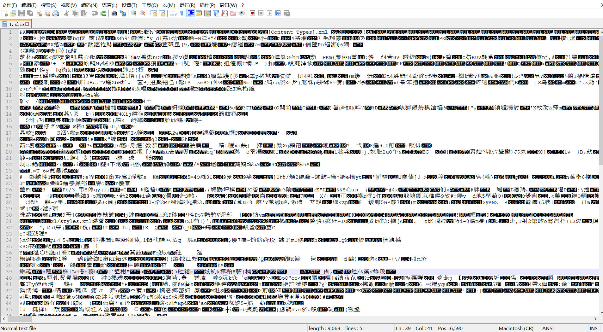
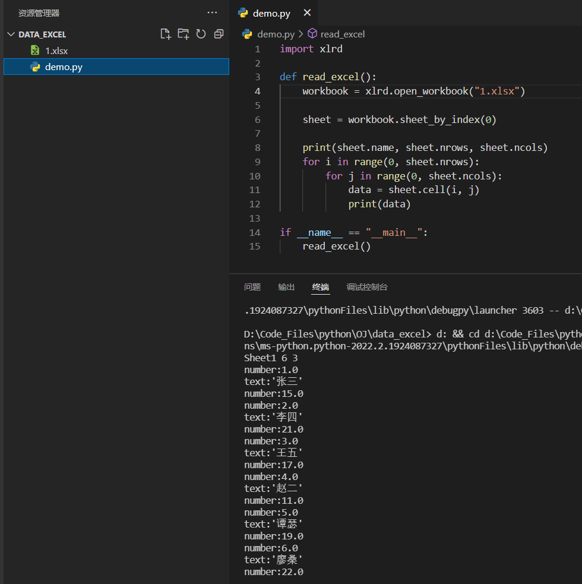

本文是我阅读 Python 数据分析与大数据处理（朱春旭著）的学习记录，如有进一步学习需求可以自行购买阅读。
[toc]
数据清洗的意义
随着计算机硬件成本的走低和互联网行业的发展，使数据的采集与收集越来越容易。人们通过对原始数据的积累和对数据的精确分析，利用这些数据创造了巨大的价值，但是海量的数据不是每一条都是有用的。
对当前的总结，对未来的预测，都建立在精确的分析之上，精确分析的基础是精确的数据。对原始数据进行整理、标注，形成一份”干净“的数据，使其适合特定场景，这个过程就是数据清洗。
数据清洗的内容
数据清洗的目标，就是要去掉噪声数据，修正错误。需要进行清洗的数据包括以下几个方面。
1、重复数据
主要是指在数据集中具有相同信息的数据。
2、错误数据
主要是指数据集中格式错误、范围错误、包含特殊字符、包含 ASCII 码的数据，以及二进制、表情符号、全角、半角或其它不可识别的数据。
3、矛盾数据
主要是指在数据集中对客观事实的不同维度的描述存在差异。
4、缺失数据
主要是指数据集中有一部分信息缺失。
数据格式与存储类型
数据拥有不同种类的存储格式和类型，为了让计算机能方便地处理这些数据，人们根据数据地存储规律，开发了不同类型地、具有针对性地分析工具。
Excel 数据
Excel 是一种常见的数据分析与存储工具，其保存后的文件后缀名是 .xls 或 xlsx。Excel 保存的数据是行列形式的表结构数据，实际上是使用二进制进行存储的。

想要获取实际数据，在 Python 中引入专门的库来读取 .xlsx 类型的数据。

XML 数据
XML 的全称是 eXtensible Markup Language，是对 HTML 语言的扩展。用户可以根据自己的需要，创建合适的标签来表示不同类型的数据。XML 是完全面向数据本身的，可以表述树结构、图结构等，由于其高度的通用性，因此广泛应用于不同系统间的信息传输。在存储方面，XML 使用的是纯文本文档格式。
在 Python 中，有多个库可以读取 XML 文档，例如导入 lxml 库使用 xml.etree.ElementTree 来读取文档。
JSON 数据
JSON 的全称是 JavaScript Object Notation，以键值对的形式存储数据，键值可以嵌套，因此可以存储树结构、图结构等。相对于 XML，JSON 是一种相对轻量级的存储方式。JSON 也是使用文本文档形式存储。
在 Python 处理 JSON 数据比较容易，在项目中导入 json 包即可。
CSV 数据
CSV 的全称是 Comma-Separated Values，以逗号为分隔符存储表格数据。在存储上采用的是纯文本形式，可以使用文本编辑器直接打开。
在 Python 中，需要导入 CSV 包才能正常解析。